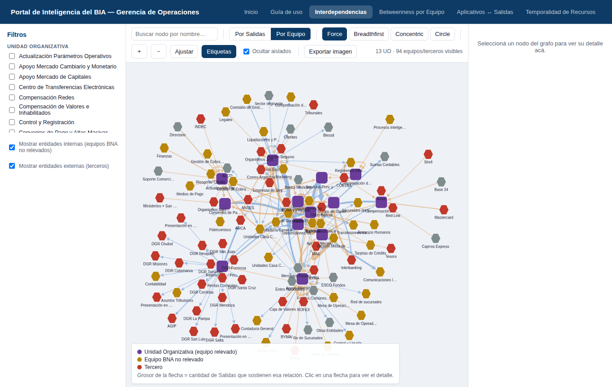
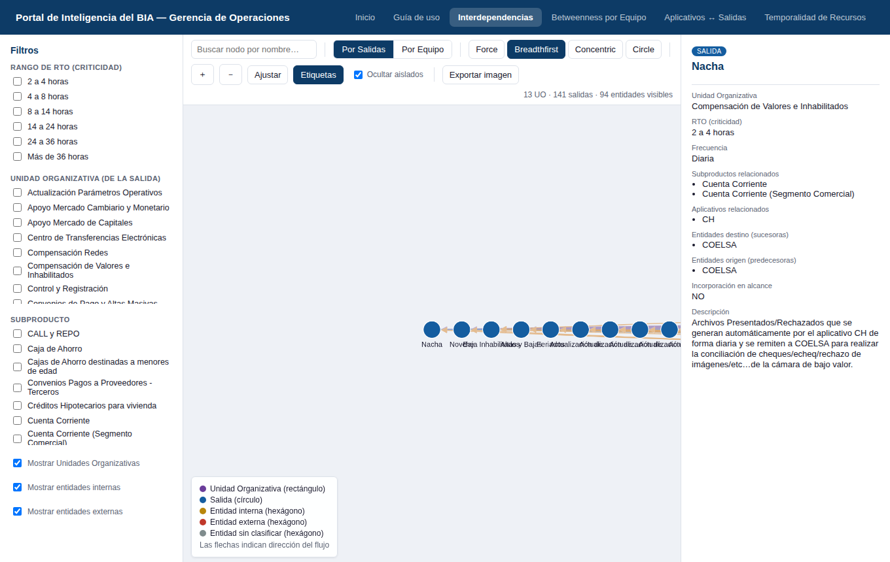
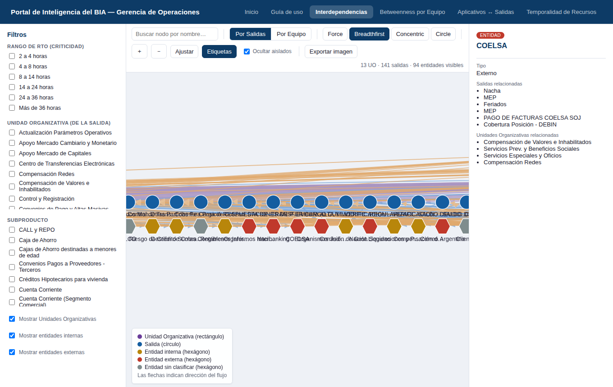
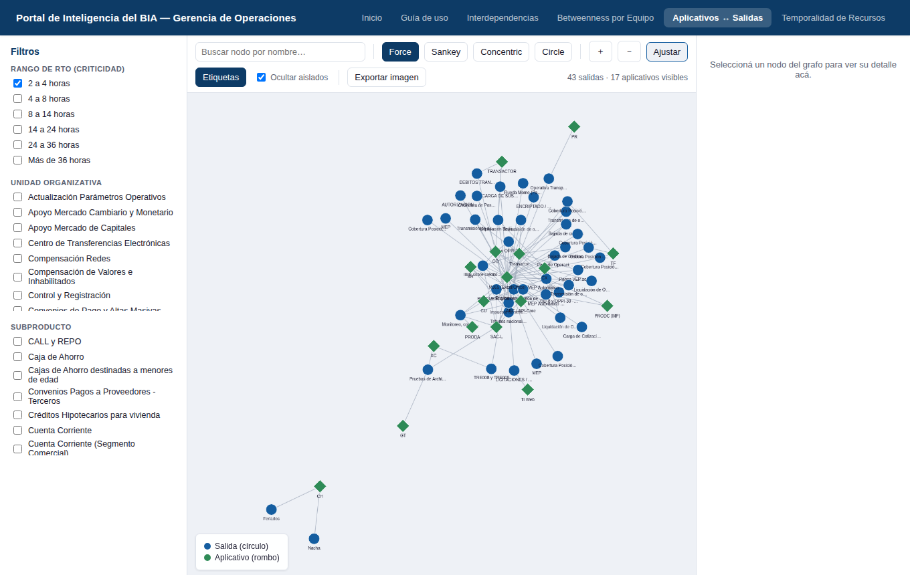
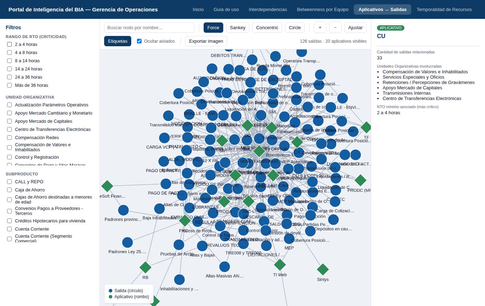
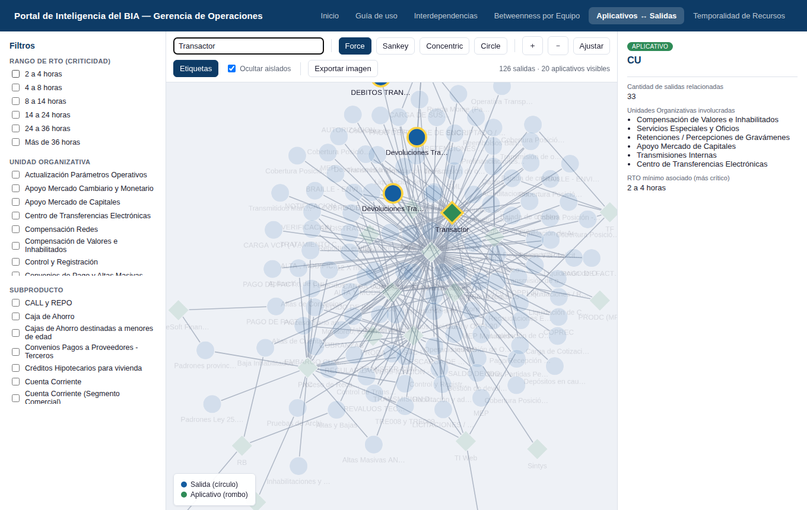
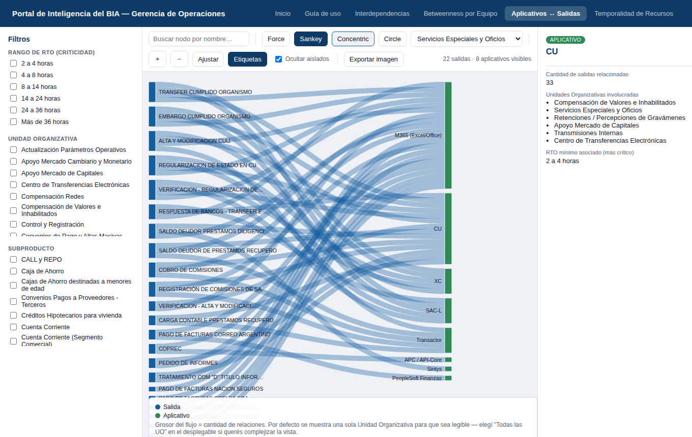
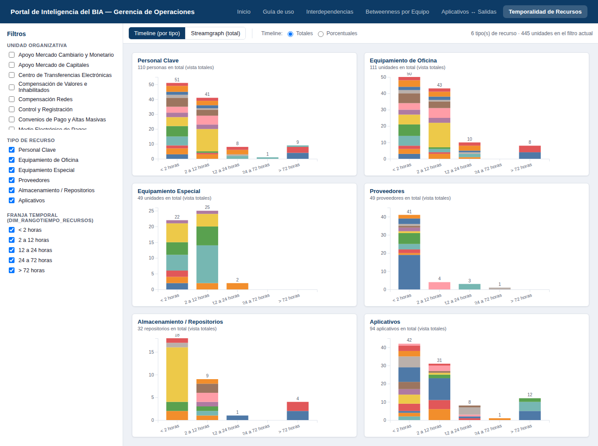
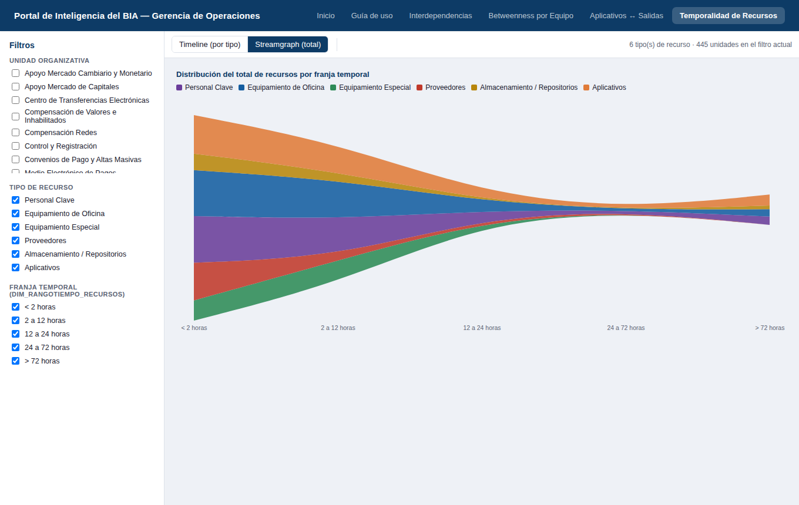

Portal de Inteligencia del BIA — Gerencia de Operaciones
Guía de uso
Cómo interpretar y sacarle provecho a los módulos del portal — qué muestra cada uno,
cómo se lee la pantalla, y una serie de casos de uso concretos con capturas reales tomadas
sobre los datos vigentes del BIA de Procesos y Actividades (Gerencia Departamental de Operaciones).
1Qué es este portal
El Portal de Inteligencia del BIA traduce el modelo de datos normalizado del Business Impact
Analysis (BIA) de Procesos y Actividades en cuatro módulos interactivos. En lugar de recorrer
planillas, permite explorar visualmente qué unidades dependen de qué otras, dónde se concentra
el riesgo estructural de la red, qué aplicativos sostienen cada salida, y cómo se distribuyen
en el tiempo los recursos necesarios para recuperar la operatoria.
Los datos provienen del Excel normalizado del BIA (141 salidas relevadas, 36 aplicativos,
13 Unidades Organizativas y 94 entidades — internas y externas) y se regeneran cada vez que
el relevamiento se actualiza (ver Preguntas frecuentes). Última actualización
de datos: 27/07/2026.
Medio Electrónico de Pagos y Transmisiones Internas cuentan como 1 equipo cada uno.
El Excel de origen los relevó separados por turno (T.M / T.T, mañana/tarde), pero operativamente
son el mismo equipo. El portal los fusiona en todas partes — nodos, filtros, Recursos y
Betweenness — así que donde antes se veían 4 equipos ahora se ven 2: "Medio Electrónico de
Pagos" y "Transmisiones Internas".
2Los módulos disponibles
Módulo
Qué muestra
Cuándo conviene usarlo
Interdependencias
Relación directa y agregada entre equipos (Por Equipo, vista por defecto), o el flujo completo Unidad Organizativa → Salida → Entidades (Por Salidas).
Para ver de un vistazo qué tan fuerte es la relación entre dos equipos, o para trazar una cadena operativa de punta a punta.
Qué Equipos BNA (relevados y no relevados), Terceros y Aplicativos actúan como intermediarios estructurales de toda la red del BIA, ponderado por criticidad (RTO).
Para responder "¿cuáles son los puntos únicos de falla de la organización, más allá de una salida puntual?". El propio módulo explica el concepto y la fórmula al principio de la página — no requiere un caso de uso aparte acá.
Aplicativos ↔ Salidas
Relación directa entre cada salida y los aplicativos que la sostienen (305 relaciones), en vista de Red o de flujo Sankey.
Para responder "¿de qué sistemas depende esta salida?" o, a la inversa, "¿qué se cae si este aplicativo falla?".
Temporalidad de Recursos
Personal Clave, Equipamiento de Oficina, Equipamiento Especial, Proveedores, Almacenamiento y Aplicativos críticos, distribuidos en las 5 franjas de recuperación.
Para dimensionar qué recursos hacen falta, y cuándo, para sostener la continuidad operativa.
En una frase: Interdependencias muestra las dependencias operativas y de
negocio; Betweenness, dónde está el riesgo estructural; Aplicativos↔Salidas, las
dependencias tecnológicas; Temporalidad de Recursos, qué hace falta y cuándo
para recuperarse. Se complementan — no reemplazan al informe del BIA, lo hacen navegable.
3Cómo se lee la pantalla
Los módulos con grafo (Interdependencias, Betweenness, Aplicativos↔Salidas) comparten la misma estructura de tres columnas; Temporalidad de Recursos usa un layout de dos columnas (filtros + gráficos) porque no es un grafo de nodos y aristas.
Panel izquierdo — Filtros
Casillas agrupadas por dimensión. Tildar varias opciones dentro de un mismo grupo las combina con "o" (ej. UO=A o UO=B); combinar filtros de distintos grupos los combina con "y".
Centro — Lienzo y barra de herramientas
Buscador de nodos por nombre, layouts/vistas (varían por módulo, ver cada sección), zoom, botón "Ajustar", toggle de etiquetas, "Ocultar aislados" (activo por defecto) y exportación a PNG. El contador arriba a la derecha muestra cuántos elementos quedan visibles con los filtros activos.
Panel derecho — Detalle
Al hacer clic en cualquier nodo (o, en la Vista por Equipo, en una flecha) se abre su ficha con los datos relacionados. Si un dato no fue relevado, se indica explícitamente "Sin datos en el modelo" en vez de dejarlo vacío.
Leyenda
Abajo a la izquierda del lienzo (o a la derecha, en Betweenness). Indica qué forma/color corresponde a cada tipo de nodo o categoría.
4Interdependencias

Vista Por Equipo (default del módulo): 13 UO y 94 equipos/terceros visibles, layout Force.
Este módulo tiene dos vistas, seleccionables desde el toolbar. Por Equipo es la vista por
defecto (más legible, sin el detalle de cada Salida individual); Por Salidas queda un clic
atrás para cuando hace falta el detalle operativo.
Vista
Qué muestra
Por Equipo (default)
Colapsa la Salida: relación directa entre dos equipos (UO o Entidad), con el grosor de la flecha proporcional a la cantidad de Salidas que sostienen esa relación. Reemplaza al viejo checkbox "Mostrar Salidas", que al destildarse dejaba la pantalla vacía.
Por Salidas
El grafo original: tres capas (UO → Salida → Entidad) con la Salida como nodo intermedio. Más detalle, más denso.
Layouts disponibles, en este orden: Force (default), Breadthfirst (jerárquico, ideal para "Por Salidas"), Concentric y Circle.
Caso 1Ver la fuerza de la relación entre dos equipos, sin el detalle de cada Salida
Objetivo: responder rápido "¿qué tan fuerte depende el Equipo A del Equipo B?", sin tener que contar Salidas una por una.
Es la vista con la que arranca el módulo (Por Equipo). Las flechas más gruesas son las relaciones más fuertes (más Salidas en común).
Click sobre una flecha para ver el detalle: cantidad exacta y el listado de Salidas que la sostienen.
Los filtros de esta vista son más simples (solo UO y Mostrar internas/externas) porque ya no hay Salida individual que filtrar por RTO o Subproducto — para eso, pasar a "Por Salidas".
Caso 2Trazar el flujo completo de una salida
Objetivo: ver, para una salida puntual, quién le provee información (predecesoras) y hacia dónde va el resultado (sucesoras) — la cadena de punta a punta.
Click en Por Salidas en el selector de vista del toolbar.
Click directo sobre el nodo de la salida (círculo azul) que interesa analizar.
El panel derecho separa Entidades destino (sucesoras) de Entidades origen (predecesoras), además de la UO, el RTO, la frecuencia y los aplicativos que la sostienen.

Detalle de la Salida "Nacha": UO Compensación de Valores e Inhabilitados, RTO 2 a 4 horas, aplicativo CH, sucesora COELSA. Útil para entender el impacto de una demora aguas arriba o aguas abajo.
Caso 3Aislar solo las dependencias internas (Por Salidas)
Objetivo: entender qué áreas propias del Banco dependen entre sí, sin el ruido de proveedores y organismos externos.
En Por Salidas, destildar Mostrar entidades externas en el panel de filtros.
Click en Ajustar.
El mismo criterio, invertido (destildar Mostrar entidades internas), sirve para dimensionar la exposición a terceros. En la vista Por Equipo existe el mismo toggle, más simple de leer porque no hay Salidas individuales de por medio.
Caso 4Medir la exposición a un proveedor externo clave
Objetivo: dimensionar cuánta operatoria del Banco depende de una entidad externa puntual — insumo directo para el análisis de riesgo de terceros.
Ubicar la entidad externa (hexágono rojo en Por Salidas, o nodo rojo en Por Equipo) — con el buscador si el nombre se conoce, por ejemplo COELSA.
Click sobre el nodo para abrir su ficha, o sobre una flecha (en Por Equipo) para ver el detalle agregado.

Detalle de COELSA: 4 salidas (Nacha, MEP, Feriados, Pago de Facturas COELSA, Cobertura Posición - DEBIN) y 4 Unidades Organizativas dependen de esta entidad externa.
Cuándo usar cada vista: "Por Equipo" (default) para una lectura ejecutiva rápida de quién depende de quién y cuánto; "Por Salidas" cuando hace falta el detalle operativo (qué Salida puntual, con qué RTO, qué Subproducto).
5Aplicativos ↔ Salidas
El toolbar tiene dos vistas: Red (Cytoscape) y Sankey (diagrama de
flujo). Los layouts/vistas están en este orden: Force (default) → Sankey → Concentric → Circle.
Los casos 1 a 4 son válidos para la vista Red; el Caso 5 muestra cuándo conviene el Sankey.
Caso 1Ver qué sostiene a las salidas más críticas
Objetivo: identificar los aplicativos de los que depende la operatoria con menor tolerancia a interrupción (RTO más bajo).
En el panel de filtros, dentro de Rango de RTO (criticidad), tildar 2 a 4 horas.
Click en Ajustar para recentrar la vista sobre el subconjunto resultante.

Filtro RTO = "2 a 4 horas" activo: 43 salidas y 17 aplicativos visibles. Los aplicativos aislados (sin conexión a ninguna salida de este rango) se ocultan solos por el default "Ocultar aislados".
Caso 2Detectar aplicativos que concentran riesgo
Objetivo: encontrar puntos únicos de falla — aplicativos de los que depende un número desproporcionado de salidas.
Sin filtros activos, hacer click directamente sobre un nodo con muchas conexiones (rombo verde con muchas líneas).
El panel derecho muestra la cantidad de salidas relacionadas, las Unidades Organizativas que las usan y el RTO mínimo asociado.

Detalle del aplicativo "CU": 33 salidas relacionadas en 6 Unidades Organizativas (Compensación de Valores e Inhabilitados, Servicios Especiales y Oficios, Retenciones/Percepciones de Gravámenes, Apoyo Mercado de Capitales, Transmisiones Internas, Centro de Transferencias Electrónicas), con RTO mínimo de 2 a 4 horas. Una falla ahí impacta transversalmente.
Nota: "M365 (Excel/Office)" aparece con aún más conexiones, pero al ser una
herramienta de uso general no es comparable como riesgo puntual con un aplicativo específico
como "CU": conviene leer la cantidad de salidas relacionadas junto con qué tan específico es
el aplicativo antes de sacar conclusiones. Por eso el módulo Betweenness por Equipo
directamente lo excluye de su cálculo — acá, en cambio, se muestra con normalidad.
Caso 3Buscar un aplicativo o salida por nombre
Objetivo: ubicar rápidamente un nodo puntual sin recorrer visualmente todo el grafo.
Escribir en el buscador (arriba a la izquierda del lienzo), por ejemplo Transactor.
Los nodos que matchean quedan resaltados en amarillo; el resto se atenúa automáticamente.

Búsqueda por texto parcial, sin distinguir mayúsculas ni acentos.
Caso 4Foco en una Unidad Organizativa puntual
Objetivo: ver, para un área específica, qué aplicativos usa y cuántas salidas produce — útil antes de una reunión de relevamiento o de un cambio de sistema.
En Unidad Organizativa, tildar la unidad de interés.
Click en Ajustar. Se puede combinar con el filtro de RTO para acotar aún más.
Caso 5Ver el flujo de una UO como Sankey
Objetivo: ver de un vistazo dónde se concentran los flujos más gruesos entre Salidas y Aplicativos, para una Unidad Organizativa a la vez — la vista completa sin filtrar es ilegible (126+ salidas).
Click en el botón Sankey (segunda opción del toolbar).
Por defecto se muestra una sola UO — la de mayor cantidad de salidas — para que sea legible desde el primer vistazo. Un desplegable arriba a la derecha permite elegir otra UO puntual.
Si necesitás la vista completa (más compleja, con las 13 UO a la vez), elegí "Todas las UO (complejiza la vista)" en ese mismo desplegable.
El grosor de cada franja es la cantidad de relaciones; pasar el mouse muestra el detalle, y click en un nodo abre su ficha en el panel derecho (igual que en la Red).

Sankey por defecto: arranca en "Servicios Especiales y Oficios" (la UO con más salidas), 22 salidas · 8 aplicativos visibles. Cambiar la UO desde el desplegable arriba a la derecha.
Los aislados nunca aparecen acá. Al ser un diagrama de flujo, un nodo sin ninguna relación simplemente no genera franja — no hace falta tildar nada para que no aparezca.
6Temporalidad de Recursos
Este módulo muestra qué recursos (Personal Clave, Equipamiento de Oficina, Equipamiento Especial,
Proveedores, Almacenamiento/Repositorios y Aplicativos) hacen falta para sostener
la operatoria, y en qué franja de tiempo desde la interrupción (las 5 franjas de
Dim_RangoTiempo_Recursos: <2h, 2-12h, 12-24h, 24-72h, >72h). No es un grafo:
tiene dos vistas.
Vista
Qué muestra
Cuándo conviene
Timeline (por tipo)
Un mini-gráfico de barras por cada uno de los 6 tipos de recurso, apiladas por Unidad Organizativa, en las 5 franjas.
Para ver el detalle de un tipo puntual sin que los recursos con pocos registros (ej. Equipamiento Especial) queden invisibles al lado de los más grandes (ej. Personal Clave).
Streamgraph (total)
Los 6 tipos apilados en una sola silueta continua.
Para una lectura ejecutiva de un vistazo: cómo se reparte el total de recursos entre franjas, sin entrar al detalle de cada tipo.

Vista Timeline: un mini-gráfico de barras apiladas por UO, por cada tipo de recurso — incluido "Aplicativos", el tipo agregado en esta revisión.
Aplicativos (6to tipo, nuevo) viene de Fact_AplicativosCriticidad:
qué aplicativos necesita cada UO tener disponibles, y en qué franja. Proveedores
incluye la totalidad de proveedores relevados en Fact_Proveedores (no solo los
marcados "Servicio Crítico" — esa columna no se usa como filtro acá, el módulo ya mostraba todos).
Caso 1Dimensionar el personal necesario en las primeras horas
Objetivo: saber cuánto Personal Clave hace falta tener disponible en la franja más urgente (<2 horas).
Vista Timeline, modo Totales (default).
Mirar la tarjeta "Personal Clave", barra de la franja "< 2 horas". Cada color es una UO distinta (ver colores en el gráfico).
Pasar el mouse sobre un segmento de color para ver el detalle exacto por UO.
Caso 2Ver si un recurso está concentrado en una sola franja
Objetivo: entender si un tipo de recurso (ej. Almacenamiento) necesita resolverse todo temprano, o se puede escalonar.
Cambiar a modo Porcentuales con el selector de radio botones.
Un tipo con una sola barra cerca del 100% está concentrado en esa franja; un tipo con barras repartidas está más escalonado en el tiempo.
Caso 3Foco en una Unidad Organizativa puntual
En el panel de filtros, tildar la UO de interés.
Los 6 tipos de recurso se recalculan solo con los registros de esa UO.
Caso 4Ver qué aplicativos críticos necesita una UO y cuándo
Objetivo: cruzar la lógica de Aplicativos↔Salidas (qué sistema sostiene qué) con la ventana de tiempo en la que ese aplicativo necesita estar disponible.
Filtrar por la UO de interés, igual que en el Caso 3.
Mirar la tarjeta "Aplicativos": qué aplicativos aparecen en qué franja, y con qué peso relativo (modo Porcentuales).
Caso 5Ver el reparto total entre franjas de un vistazo
Click en Streamgraph (total).
El ancho vertical de cada franja de color es proporcional a la cantidad de ese tipo de recurso en esa ventana de tiempo. Pasar el mouse muestra el total del tipo con el filtro activo.

Streamgraph: los 6 tipos de recurso apilados en una sola silueta a lo largo de las 5 franjas temporales.
Proveedores, Almacenamiento y Aplicativos no tienen una "cantidad" propia en el Excel (solo un check de "Aplica" por franja): en este módulo cada fila marcada cuenta como 1 recurso que necesita estar recuperado en esa franja — es la unidad de medida más honesta que permite el dato de origen.
7Tips generales
Combiná filtros progresivamente. Es más fácil partir de un filtro amplio (una UO o un RTO) y agregar el segundo criterio después de ver el resultado, que tildar todo de entrada.
"Ocultar aislados" ya viene activo. Todo el portal muestra por defecto solo lo que tiene relación. Si necesitás ver también los elementos sin ninguna conexión dentro del filtro elegido (por ejemplo, para detectar aplicativos que quedaron sin ninguna Salida asociada), destildá esa casilla donde esté disponible.
Los defaults son un punto de partida legible, no un límite. El Sankey arranca con una sola UO, Interdependencias arranca en "Por Equipo" y Betweenness arranca en Top 15 — en los tres casos hay un control a mano (desplegable, toggle de vista, o "Cantidad a mostrar") para complejizar la vista apenas haga falta.
Exportar imagen sirve para informes. El botón "Exportar imagen" genera un PNG del estado actual del grafo (con los filtros aplicados) — útil para pegar en una presentación o en un mail sin depender de que el destinatario abra el portal. En la vista Sankey, usar clic derecho → "Guardar imagen como" sobre el diagrama.
Los nodos se pueden arrastrar. Si el layout automático deja dos nodos superpuestos, se puede reacomodar manualmente arrastrando; y con clic + arrastre sobre el fondo se seleccionan varios nodos a la vez.
8Preguntas frecuentes
¿Por qué un campo dice "Sin datos en el modelo"?
El panel de detalle nunca completa información que no fue relevada. Si un campo aparece así, significa que ese dato no está cargado en el Excel de origen para ese nodo — no es un error del portal.
¿Los datos se actualizan solos?
No. El portal lee archivos JSON estáticos generados a partir del Excel normalizado del BIA. Cuando el relevamiento se actualiza, hay que correr python3 tools/excel_to_json.py <ruta al Excel> y volver a publicar el portal; no hay una conexión en vivo a ninguna base de datos.
¿Por qué antes veía 15 Unidades Organizativas y ahora veo 13?
"Medio Electrónico de Pagos T.M/T.T" y "Transmisiones Internas T.M/T.T" se fusionaron en 1 equipo cada uno (son el mismo equipo en dos turnos, no cuatro equipos distintos). Ver la nota en Qué es este portal.
¿Por qué Aplicativos↔Salidas no distingue Unidad Organizativa en los aplicativos?
Porque un aplicativo puede ser usado por varias UO al mismo tiempo — pertenece al modelo, no a un área en particular. Para ver qué UO usan un aplicativo puntual, hacé clic en su nodo: el panel derecho las lista.
¿Qué significa que una entidad sea "sin clasificar" en la Vista Por Salidas de Interdependencias?
Un grupo reducido de entidades (16 sobre 94) no tiene definido si son internas o externas en el Excel de origen. Ahí quedan siempre visibles, coloreadas en gris, salvo que se oculten indirectamente al tildar "Ocultar aislados". En Betweenness y en la Vista Por Equipo de Interdependencias, en cambio, sí se clasificaron 1x1 (ver la nota metodológica dentro del propio módulo de Betweenness por Equipo) porque esos módulos necesitan una categoría binaria para tener sentido.
¿Por qué no hay una sección dedicada a Betweenness en esta guía?
Porque no hace falta duplicarla: el módulo explica el concepto, la fórmula y la metodología (ponderación por RTO, exclusión de M365) directamente al principio de su propia página. Acá solo aparece resumido en la tabla de módulos disponibles, con el link directo.
¿Puedo ver dos módulos al mismo tiempo?
No en la misma pantalla — son vistas independientes, pensadas para preguntas distintas (ver Los módulos disponibles). Se navega de uno a otro desde el menú superior.